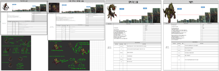
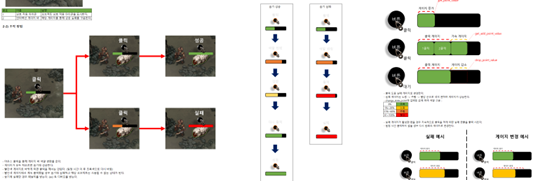

체력 구간
보스의 현재 체력 구간을 기준으로 다음 행동 묶음이 달라집니다.
03 · HTML5 MMORPG
파밍 목적이 분명한 인스턴스 던전과 학습 가능한 보스 패턴, 전투 사이의 탐험 경험을 만드는 오브젝트와 레벨 디자인을 리딩했습니다.

전투가 스탯 비교에만 머물면 패턴을 파악하고 공략을 발전시키는 재미가 약해질 수 있습니다. BT(Behavior Tree)를 바탕으로 체력 구간마다 행동 패턴이 바뀌는 페이즈 전환 보스를 설계했습니다.
보스의 현재 체력 구간을 기준으로 다음 행동 묶음이 달라집니다.
페이즈별 행동과 스킬 구성을 나눠 공략 과정에 학습 요소를 둡니다.

유저가 패턴을 학습하고 재도전할 때 공략 방식을 발전시킬 수 있는 전투를 만드는 것이 목표였습니다.
던전이 전투만으로 채워질 때 생길 수 있는 단조로움을 줄이기 위해, 세계관과 연결된 인터랙션 오브젝트를 배치했습니다. 유저가 직접 오브젝트를 조작하도록 구성해 전투 외 행동을 확보했습니다.
오브젝트는 단독 기능으로 두기보다 맵 동선, 상호작용 단계, 결과 상태가 이어지도록 설계해 탐험의 이유를 만들고자 했습니다.

맵을 전투 장소에만 머물지 않게 하고, 유저가 공간을 살피고 직접 조작하는 탐험 경험을 제공하는 것을 목표로 했습니다.